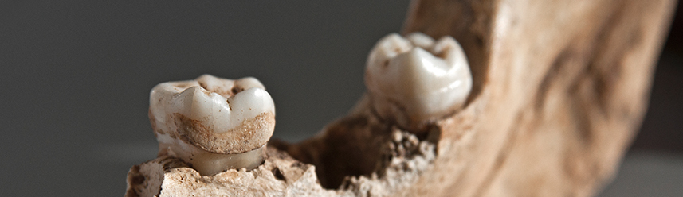

Our Key Publications
Neanderthal behaviour, diet, and disease inferred from ancient DNA in dental calculus
Nature. 2017 Apr 20;544(7650):357-361. doi: 10.1038/nature21674. Epub 2017 Mar 8.
Ancient DNA analysis of dental calculus
J Hum Evol. 2015 Feb;79:119-24. doi: 10.1016/j.jhevol.2014.06.018. Epub 2014 Dec 1.
The influence of Antarctic subglacial volcanism on the global iron cycle during the Last Glacial Maximum
Nature Communications volume 8, Article number: 15425 (2017)
Early Last Interglacial ocean warming drove substantial ice mass loss from Antarctica
PNAS February 25, 2020 117 (8) 3996-4006; first published February 11, 2020
Consequences of colonialism: A microbial perspective to contemporary Indigenous health
AJPA. 2018 Aug 29 https://doi.org/10.1002/ajpa.23637
Contamination in Low Microbial Biomass Microbiome Studies: Issues and Recommendations
Trends Microbiol. 2019 Feb;27(2):105-117. doi: 10.1016/j.tim.2018.11.003. Epub 2018 Nov 26.
Laboratory contamination over time during low‐biomass sample analysis
Molecular Ecology Resources Volume 19, Issue 4: 982-996; 2019 Mar 19
Sequencing ancient calcified dental plaque shows changes in oral microbiota with dietary shifts of the Neolithic and Industrial revolutions
Nat Genet . 2013 Apr;45(4):450-5, 455e1. doi: 10.1038/ng.2536. Epub 2013 Feb 17.